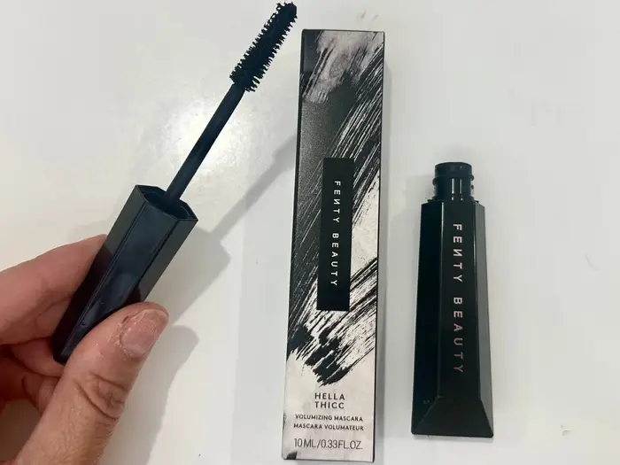
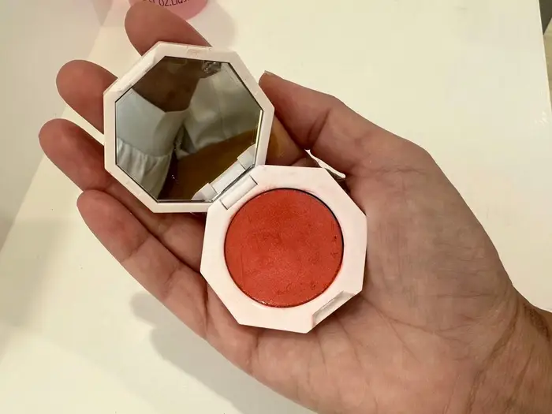

OCTOBER 5, 2024
I tried every item in Rihanna's Fenty Beauty line. Here are 5 products that really impressed me — and 2 that didn't.

PUBLISHED ARTICLES
wanted to love the Stunna Lip Paints from Fenty Beauty but they fell short for me.
Vinny Guadagnino Dishes on ‘Epic’ Gift Kobe Bryant Gave Him
- As a beauty reporter, I've tried every product in Rihanna's Fenty Beauty line.
- I loved products like the Match Stix Contour Skinsticks and Bright Fix eye brightener.
- I wouldn't recommend Fenty Beauty's Pro Filt'r soft-matte longwear foundation or Stunna Lip Paints.
For the past seven years, Fenty Beauty by Rihanna has stood the test of time — a rarity among celebrity beauty brands.
The musician launched Fenty Beauty in 2017 and, according to Vogue, it had $100 million in sales within 40 days of its launch. Forbes estimated in 2021 that the brand was worth $2.8 billion.
Even now, I find it hard hard to scroll through TikTok without stumbling upon an influencer raving about Fenty Beauty's latest product. Although I agree many of them are pretty great, not all of them live up to the hype.
As a beauty reporter, I've tested every type of Fenty Beauty product. A few have become staples in my makeup bag, but others were a hard pass.
Here are some that impressed me and a few that didn't.
Hella Thicc volumizing mascara checks all of the boxes for me.
The Fenty Beauty Hella Thicc volumizing mascara has won me over.
Hella Thicc volumizing mascara ($19)
I didn't love Fenty Beauty's initial mascara launch, Full Frontal Volume, lift and curl mascara. It didn't do anything special for my lashes, and I could name several other cheaper mascaras I liked way better.
Fortunately, Hella Thicc changed my opinion on the brand's ability to create a decent mascara. The first time I tested it, I was shocked at how well it separated my lashes, making them instantly look fuller with a few swipes.
The ultra-creamy texture lifted my lashes without weighing them down or clumping them together. Overall, I really liked how dramatic my eyes looked after using this mascara.
I get why Fenty Beauty's contour sticks are so popular.
I use a Fenty Beauty Match Stix Contour Skinstick to shape my face and nose.
Match Stix Contour Skinstick ($32)
The Match Stix Contour Skinstick is one of Fenty Beauty's bestsellers, and for very good reason — it's a great product.
The cream-to-powder formula glides effortlessly onto my skin, making it easy for me to use it for contouring to create the illusion of a chiseled jawline or sculpted cheekbones in seconds.
"The only downside I've found with this product is its chubby design makes it difficult to use when contouring my nose area. For a more precise application, I have to swipe some product onto a small blending blush.
I was impressed with Fenty's We're Even concealer the first time I tried it.
The We're Even hydrating longwear concealer comes in 50 shades.
We're Even hydrating longwear concealer ($30)
Creamy and thick, the We're Even hydrating concealer offers excellent coverage. Despite the formula's thickness, I feel like it helps me blur my imperfections without making my face look cake-y.
"A little bit of this medium-coverage concealer goes a long way, so I recommend applying a thin layer and building up as needed.
Fenty Beauty's Cheeks Out Freestyle cream blush is one of my go-to products.
Cheeks Out Freestyle cream blush comes in a few shades.
Cheeks Out Freestyle cream blush ($26)
Fenty Beauty's Cheeks Out Freestyle cream blush helps me achieve a good, flushed look, even on minimal-makeup days.
Cream blushes like these are great because you can swipe them on with your fingers and blend them out with little effort when in a hurry.
I specifically love Fenty Beauty's extra-creamy Freestyle formulation, which is highly pigmented and stays put on my face for hours. My favorite shade is Riri, a soft rosy mauve.
The brand's eye brightener has impressed me, too.
Stores like Sephora sometimes have tester options of the eye brightener so you can see which shade will work for you.
Bright Fix eye brightener ($28)
Fenty Beauty's Bright Fix eye brightener has a ball-tipped applicator that provides an almost cooling effect when placed under your eyes. It feels especially nice and refreshing on mornings when I'm tired.
I do feel like the product helps me hydrate and brighten the skin under my eyes so I can achieve a wide-awake look on a Monday morning after a busy weekend
Plus, Bright Fix comes in a practical squeeze tube I can throw in my purse without taking up too much space. My favorite shade is Crepe.
On the other hand, the Pro Filt'r soft-matte longwear foundation is probably my least favorite product in the entire line.
Pro Filt'r soft-matte longwear foundation comes in way more shades than what's pictured here.
Pro Filt'r soft-matte longwear foundation ($40)
I prefer a foundation that offers good coverage and lasts all day — and Fenty Beauty's Pro Filt'r soft-matte longwear foundation let me down. It's probably my least-favorite Fenty Beauty product.
Although it lasted several hours when I tested it, I found the foundation felt way too drying for my skin. It only seemed to highlight my dry patches, fine lines, and blemishes — all of which I try to use foundation to hide.
You might want to give this foundation a try if you don't need a lot of coverage and are just looking to even out your skin tone a bit. It might also work better for those with oily or combination skin.
Despite not loving this product, I did enjoy using the shade-finder tool on the Fenty Beauty website. It uses AI technology to analyze a selfie and help shoppers find their ideal foundation shade.
I wanted to love the Stunna Lip Paints but they fell short.
Fenty Beauty's Stunna Lip Paints didn't win me over or last well on my lips.
Stunna Lip Paint longwear fluid lip color ($29)
Fenty Beauty's Stunna Lip Paints have adorable packaging — each comes in what looks like a mini nail-polish bottle.
I was especially excited to try the shade Uncuffed, which I thought was the perfect mauve color. Sadly, this product was a pass for me, as I found it was very messy and the color transferred too easily.
The first time I wore it, my lip color ended on my teeth, above my lips, and on the sleeve of my shirt within minutes of applying it. Nothing is as embarrassing as being at your child's PTA meeting and having another mom tell you your lipstick is everywhere.
I also didn't think this product was long-lasting, even when I took extra caution not to let anything touch my lips while it dried. Most of the color on my lips faded soon after I applied it.
Overall, I think $29 is too pricey for a lip color, let alone one that doesn't stay put.
More Published Articles